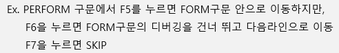

20221025 - Debugging
Debugging
DEBUG - 벌레를 잡다의 의미로 오류를 찾아 수정하는 일을 의미
ABAP Debugger는 ABAP Workbench에 통합된 tool이며, 다른 언어에서는 디버깅을 실행하기 위해 독립 프로그램을 실행하여야 하지만 ABAP은 통합된 환경으로 ABAP 에디터와 디버깅 화면을 자유롭게 변환 가능
- classic debugger - ABAP 프로그램 실행 시 동일 세션에서 open
- new debugger - ABAP 프로그램과 별개의 외부 세션에서 open
명령어 (command) 창에서 /H 입력 후 실행하면 진행
디버깅을 사용할 때, 많이 사용하는 기능키는 F5, F6, F7, F8
- F5 - 한 단계씩 다음 단계로 이동
- F6 - 한 단계씩 다음 단계로 이동하나, subroutine을 마난게 되면 실행 후 다음 단계로 이동
- F7 - 현재 실행중인 subroutine을 빠져나와 다음 단계로 이동
- F8 - 프로그램 실행 또는 다음 중단점까지 실행

F5

F6

F7

Go to statement

SY-DBCNT

Internal table data


Change selected rows


Delete selected rows


Append row


Insert row


Delete whole table/row area


Table display in ALV


Save in file